This was written entirely with AI.
Object design
System design gives the architecture. Object design fills in the details of the classes inside it. It has four activities:
- Interface specification. Define the operations of each class: arguments, type signatures and exceptions.
- Reuse. Use existing libraries and design patterns.
- Restructuring. Change the design to meet goals such as maintainability and flexibility.
- Optimisation. Improve speed or memory use.
Design patterns
A design pattern is a proven solution to a problem that occurs again and again in a context. It is a template of classes and objects: their dependencies, structure, interactions and conventions. The “Gang of Four” (GoF) book of 1994 lists 23 patterns.
Each pattern has four elements:
| Element | Content |
|---|---|
| Name | A short name. It gives designers a shared vocabulary. |
| Problem | When to apply the pattern. What problem it solves. |
| Solution | The classes, their relationships, responsibilities and collaborations. |
| Consequences | The results: benefits and costs. They depend on the situation. |
The GoF patterns are in three groups:
| Group | Purpose | Patterns in this course |
|---|---|---|
| Creational | How objects are created | Factory (Factory Method, Abstract Factory) |
| Structural | How classes and objects are combined into larger structures | Façade |
| Behavioural | How objects interact and share responsibility | Strategy, Observer |
In an exam answer about a pattern, always give the design problem first, then the pattern, then the class diagram with the role of each class.
Strategy pattern
Problem
A set of algorithms or behaviours must be interchangeable. The client must be able to change the algorithm, even at run time, without a change to the client code. New algorithms must be addable without changes to existing code.
Signs in a project description: “a variety of …”, “different methods of …”, “the user can choose …”, “support new … in future”.
Solution
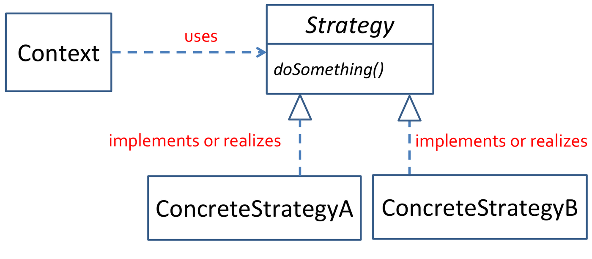
How to read the template:
- Context → Strategy, a dashed arrow labelled “uses”: the Context depends on the Strategy interface only. It never points at a concrete class.
- Strategy is in italics, and so is
doSomething(). Italics mean abstract: the interface declares the operation but has no code. - ConcreteStrategyA and ConcreteStrategyB each have a dashed line with a hollow triangle to Strategy. This is realization: each class implements the interface in its own way.
- To add an algorithm C, add one more box under Strategy with one more dashed triangle. Nothing else in the diagram changes.
| Class | Role |
|---|---|
| Context | Uses an algorithm. It holds a reference to a Strategy object and calls it. It does not know which concrete strategy it has. |
| Strategy (interface) | Declares the operation that all algorithms share, for example
doSomething(). |
| ConcreteStrategyA, B, … | Each one implements the operation in its own way. |
The Context depends only on the Strategy interface (program to an interface). To add a new algorithm, add a new ConcreteStrategy class. No existing class changes (open–closed). The varying part is moved out of the Context into separate classes (encapsulate what varies, composition over inheritance).
Example in code: payment methods
// Strategy interface
public interface PaymentStrategy {
void pay(int amount);
}
// Concrete strategies
public class CreditCardStrategy implements PaymentStrategy {
private String cardNumber;
public CreditCardStrategy(String cardNumber) { this.cardNumber = cardNumber; }
public void pay(int amount) { System.out.println(amount + " paid with credit card."); }
}
public class PaypalStrategy implements PaymentStrategy {
private String email;
public PaypalStrategy(String email) { this.email = email; }
public void pay(int amount) { System.out.println(amount + " paid using PayPal."); }
}
// Context
public class ShoppingCart {
private PaymentStrategy paymentStrategy;
public void setPaymentStrategy(PaymentStrategy s) { this.paymentStrategy = s; }
public void checkout(int amount) { paymentStrategy.pay(amount); }
}
// Client
ShoppingCart cart = new ShoppingCart();
cart.setPaymentStrategy(new CreditCardStrategy("1234-5678-9012-3456"));
cart.checkout(500);
cart.setPaymentStrategy(new PaypalStrategy("user@example.com"));
cart.checkout(300);How the code maps onto the template:
| Template role | In the code |
|---|---|
| Context | ShoppingCart. It holds a PaymentStrategy
field and calls pay() in checkout(). |
| Strategy | PaymentStrategy, with the one operation
pay(int amount). |
| ConcreteStrategy | CreditCardStrategy, PaypalStrategy. |
| Client | The last four lines. It chooses a strategy and gives it to the cart
with setPaymentStrategy(). |
Note the last two checkout() calls. The same cart pays
first by card, then by PayPal. Only the strategy object changed.
ShoppingCart has no if on the payment
type.
The general shape of a Strategy problem
Use Strategy when you can finish this sentence: “The system must do X in several different ways, and more ways may come later.” Then:
- X becomes the Strategy interface, with one operation.
- Each way becomes one ConcreteStrategy.
- The class that needs X becomes the Context and holds a Strategy reference.
The lecture’s example is data access. A resource manager must store
data, but the store can be a flat file, MySQL or DB2.
DataStoreInterface is the Strategy, and
FlatFileImpl, MySQLImpl and
DB2Impl are the concrete strategies (see the figure in the
Strategy + Factory section below).
Other uses:
- sorting algorithms: quick sort or merge sort, chosen by the size of the data;
- compression formats: ZIP, GZIP or TAR;
- routes in a navigation app: driving, walking, cycling or public transport;
- recommendation or ranking algorithms.
Consequences
| Pros | Cons |
|---|---|
| Encapsulates each algorithm | Code becomes complex and hard to follow if it is overused |
| Hides the implementation from the client | The client (or something) must still choose the concrete strategy |
| Behaviour can change at run time | More classes |
Observer pattern
Problem
Many objects (observers) must get an update when another object (the subject) changes. Two conditions make this hard:
- The subject does not know, and does not care, who the observers are or how many there are. Observers can join and leave at any time.
- The observers want to know about each change at once, but they do not know when it will happen. They cannot keep checking the subject, because they have other work to do.
Example: a baby (subject) cries. Caregivers (observers) want to know when the baby cries, but they cannot watch the baby all the time. The baby does not care who looks after it. Each caregiver decides what to do when the baby cries.
Other examples: a course site and the students registered on it; a stock market and its investors; a worksheet and its charts.
The solution must give loose coupling between the subject and the observers. Loose coupling is a benefit for both sides. The Observer pattern is also called publish–subscribe.
The Observer pattern defines a one-to-many dependency between objects. When one object changes state, all its dependents are notified and updated automatically.
Solution
The pattern has two mechanisms:
- Subscription. Observers register and unregister with the subject whenever they want. The subject keeps a list of observers.
- Notification. When the subject changes, it goes through its list and tells each observer.
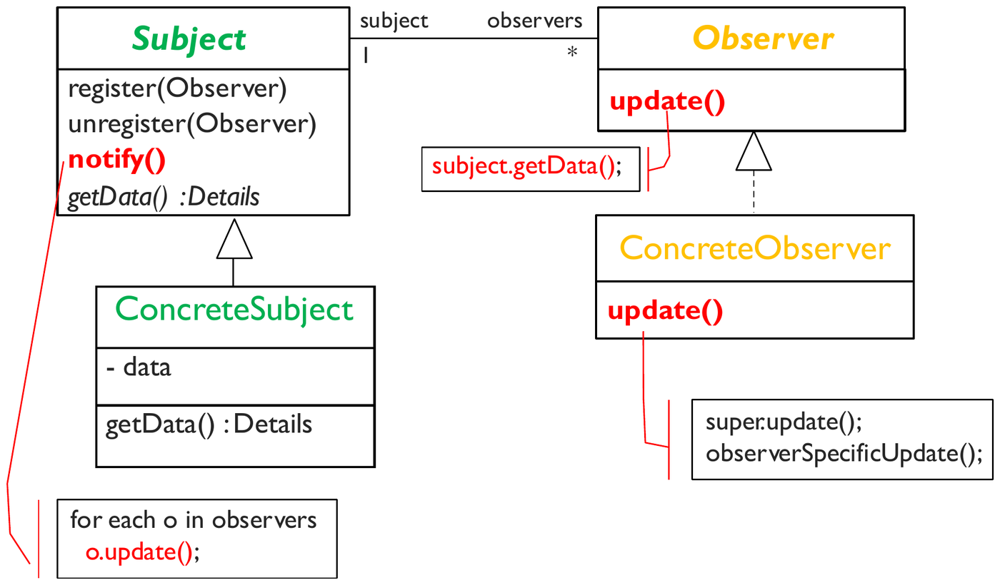
How to read the template:
- Subject — Observer, a solid line with
1and*: one subject keeps a list of many observers. The role names on the line,subjectandobservers, are the names of the fields that hold the references. - Subject has
register,unregisterandnotify. The note linked tonotify()gives its code:for each o in observers: o.update();. - ConcreteSubject inherits from Subject (solid line,
hollow triangle). It holds the real
dataand gives it out throughgetData().getData()is in italics in Subject, so the subclass must provide it. - ConcreteObserver realizes the Observer interface
(dashed line, hollow triangle). The note on Observer’s
update()sayssubject.getData();: when told, the observer calls back for the data. This is the pull update. The note on ConcreteObserver’supdate()says: do the common part (super.update()), then this observer’s own reaction.
| Class | Role |
|---|---|
| Subject | Keeps the list of observers. Has register(Observer),
unregister(Observer) and notify().
notify() calls update() on each observer. |
| ConcreteSubject | Holds the real data. Has getData() so that observers
can read the new state. |
| Observer (interface) | Declares update(). |
| ConcreteObserver | Implements update() with its own reaction. Holds a
reference to its subject. |
The subject knows only the Observer interface. It never knows the concrete observer classes.
Pull, push, and push + pull
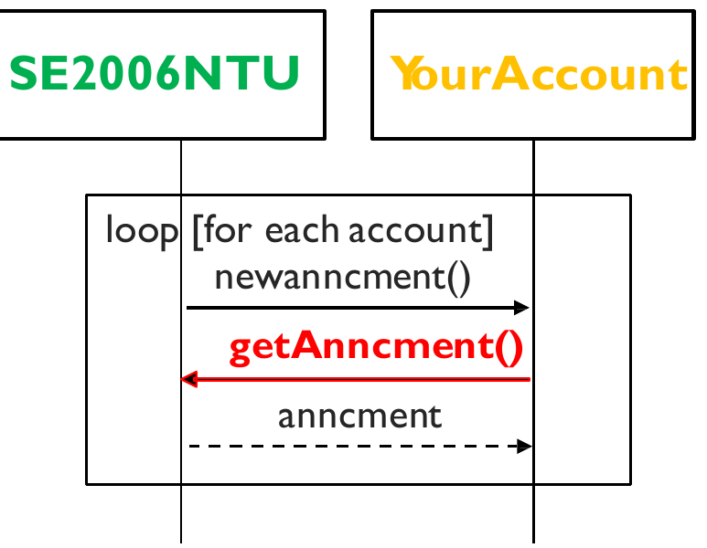
This is a sequence diagram: time runs from top to bottom. Each box at the top is an object, and the vertical line under it is its lifeline. The example is a course (subject) and a student account (observer).
- The
loop [for each account]frame says: repeat the three messages for every registered account. - The course calls
newanncment()on the account: “there is a new announcement”. No details are sent. - The account calls back
getAnncment()on the course (the red arrow). This is the pull. - The dashed arrow returns
anncment, the announcement itself.
| Protocol | How it works | Communication |
|---|---|---|
| Pull | The subject sends a simple notification: update(). If
the observer is interested, it calls back subject.getData()
for the details. |
Two-way |
| Push | The subject sends the full details in the notification:
update(details), whether the observer wants them or not.
The observer does not need to call back. |
One-way |
| Push + pull | The subject pushes some details. If the observer wants more, it
pulls the rest with getMoreData(). |
Both |
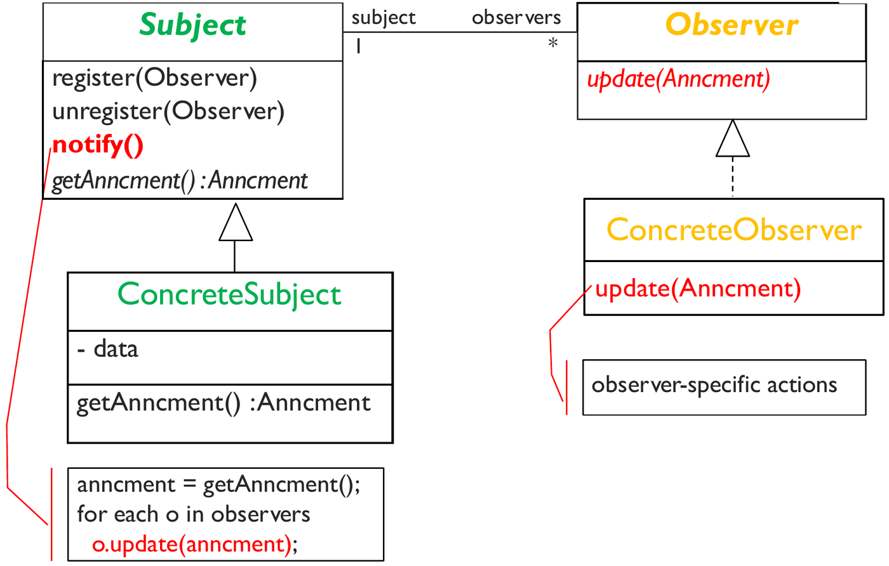
Compare it with the pull template. Two things change, both in red.
update now takes a parameter,
update(Anncment). And the code of notify()
reads the announcement once
(anncment = getAnncment()) and passes it to every observer
in o.update(anncment). The observer no longer calls back,
so it does not need to keep a reference to the subject for this.
Which is better depends on the case:
- Push is simpler for observers and faster when all observers need the same small data. It wastes effort if the data is large and most observers do not need it.
- Pull sends only a small notification. Each observer fetches only what it needs. But each observer needs a reference to the subject, and it makes an extra call.
Selective notification and interest subscription
Often, an observer cares about only part of the subject. A student in a course wants only the announcements for their own tutorial group. An investor wants only the price changes for their own stocks.
- Interest subscription:
register(Observer, Interest)andunregister(Observer, Interest). The subject keeps a list of observers for each interest. - Selective notification:
notify(Interest)tells only the observers of that interest.
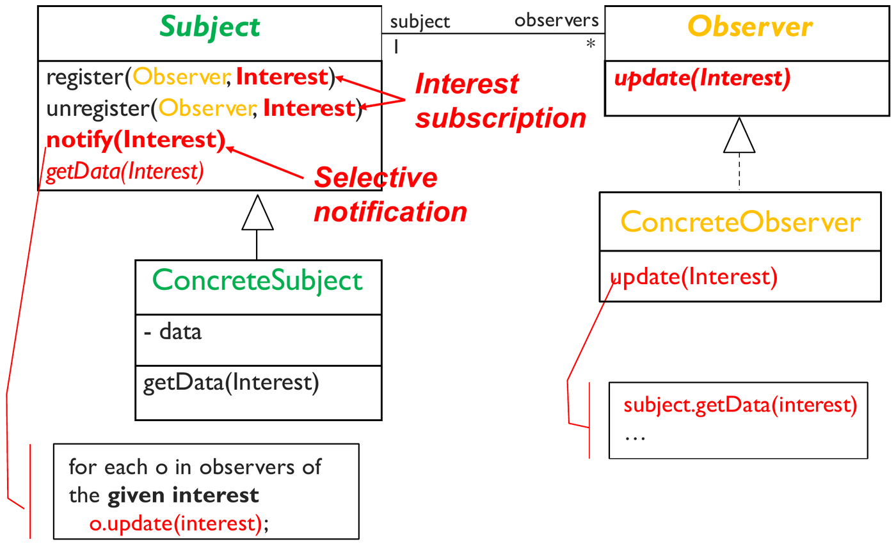
Compare it with the plain template. Every method now carries an
Interest parameter:
register(Observer, Interest)andunregister(Observer, Interest): the observer says what it wants to hear about.notify(Interest): the note says “for each o in observers of the given interest”. Only those observers get the call.update(Interest)tells the observer which interest changed. It then pulls only that part withsubject.getData(interest).
Example: Java Swing events
Event handling in Java Swing is the Observer pattern. A button is the subject. Action listeners are the observers.
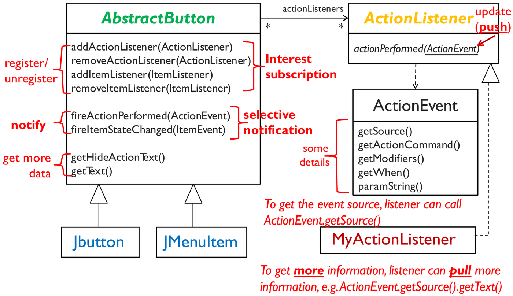
Map each part of the figure onto the Observer roles:
| In the figure | Observer role |
|---|---|
AbstractButton (and its subclasses
JButton, JMenuItem) |
Subject |
ActionListener interface |
Observer |
MyActionListener (your class) |
ConcreteObserver |
addActionListener /
removeActionListener |
register / unregister |
fireActionPerformed(ActionEvent) |
notify |
actionPerformed(ActionEvent) |
update |
Then the variations:
- There are two kinds of listener, action and item. Each has its own add and remove methods. This is interest subscription.
fireActionPerformedcalls only the action listeners, andfireItemStateChangedonly the item listeners. This is selective notification.actionPerformed(ActionEvent)hands the listener anActionEventobject that already holds some details (getActionCommand(),getWhen(), …). This is the push part.- For more, the listener calls
event.getSource()to get the button, thengetText()on it. This is the pull part. Together: push + pull.
Consequences
| Pros | Cons |
|---|---|
| Loose coupling between subject and observers | Slower: each change triggers many calls |
| Supports broadcast communication | Adds complexity if it is not needed |
| Subjects and observers can be reused independently | The order of notification is not defined |
Factory pattern
Problem
The client must create objects, but:
- it does not know which class it needs until run time;
- it must create one of several classes that share one interface, without knowing the creation logic;
- the choice of class and the creation steps are complex;
- the team wants to replace existing classes or add new classes later.
Without a factory, each client has its own if / else
code that chooses the class with new. This creation code is
copied in many places. Each new class forces changes in all of them.
Solution
Move the selection and creation of objects into one place: a factory.

How to read the template:
- Context → StaticFactory, a dashed “uses” arrow. The
Context asks the factory for an object. It never calls
newon a product class itself. createProduct()is underlined. In UML, underlined means static: you call it on the class,StaticFactory.createProduct(), without first creating a factory object.- StaticFactory → AbstractProduct, a dashed “create” arrow. The factory creates objects, and its return type is the interface, not a concrete class.
- ConcreteProductA, B and C each realize AbstractProduct (dashed line, hollow triangle). The factory decides which one to build. The Context sees only the interface.
| Class | Role |
|---|---|
| Context (client) | Asks the factory for an object. Uses it only through the AbstractProduct interface. |
| StaticFactory | Has createProduct(). Decides which concrete class to
create and creates it. |
| AbstractProduct (interface) | The interface that all products share. |
| ConcreteProductA, B, C | The classes that the factory can create. |
Benefits
- Encapsulates object creation. Removes duplicate creation code from the clients. Puts the class selection and creation code in one place.
- Easy to extend. Replace a class (MySQLImpl1 → MySQLImpl2) or add a class (OracleImpl) in one place.
- Easy to change the creation logic. For example, return one shared object (Singleton) or create the object only when it is first needed (lazy initialisation).
Strategy + Factory
Strategy makes the algorithms interchangeable. But some code must still choose and create the concrete strategy. A Factory does this. The two patterns often work together.
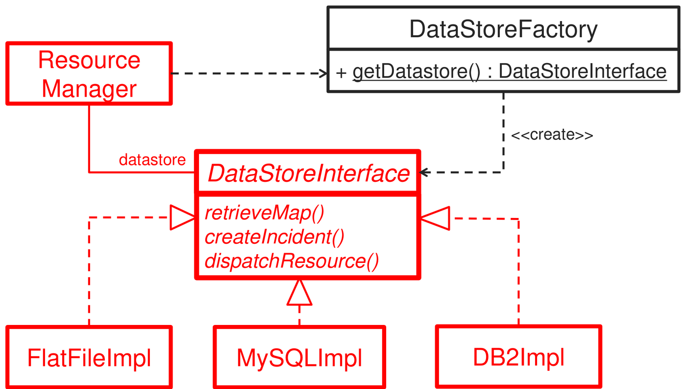
The red classes are the Strategy part. The black class is the Factory part:
- ResourceManager is the Context. It holds a
datastorereference of type DataStoreInterface, the Strategy interface. It callsretrieveMap(),createIncident()anddispatchResource()without knowing which store is behind them. - FlatFileImpl, MySQLImpl and DB2Impl are the concrete strategies. Each realizes the interface (dashed line, hollow triangle).
- DataStoreFactory has the static method
getDatastore()(underlined). Its<<create>>arrow shows that it builds one of the concrete stores and returns it as a DataStoreInterface. - The dashed arrow from ResourceManager to the factory shows the one call that joins the two patterns. At start-up, the manager asks the factory for a store and keeps it.
To move from MySQL to DB2, only the factory changes. ResourceManager stays the same.
Strategy + Factory + dynamic loading
The factory can read the class name from a configuration file and load that class at run time. Then the program can use a new class without any change to its code. This is how frameworks load the classes that applications provide:
- Eclipse loads new views (plug-ins) this way.
- Java Swing loads new look-and-feel classes.
- JDBC loads the database driver for each database.
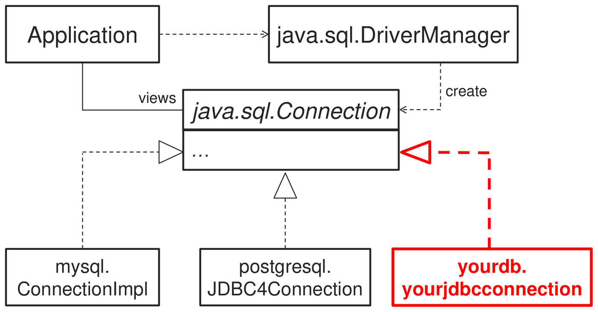
It is the same shape as the data-store figure, with real Java classes:
- Application is the Context. It talks only to java.sql.Connection, the Strategy interface (in italics, so abstract).
- java.sql.DriverManager is the Factory. It creates the right connection object.
- mysql.ConnectionImpl and postgresql.JDBC4Connection are concrete strategies that the database vendors wrote.
- The red yourdb.yourjdbcconnection is the point of dynamic loading. A new vendor writes a class that realizes Connection and ships it as a driver. DriverManager loads it by name at run time. Neither the Application nor the JDK changes.
Façade pattern
Problem
A client must use a complex subsystem with many classes. The client must know all of them and call them in the right order. The client is tightly coupled to the subsystem.
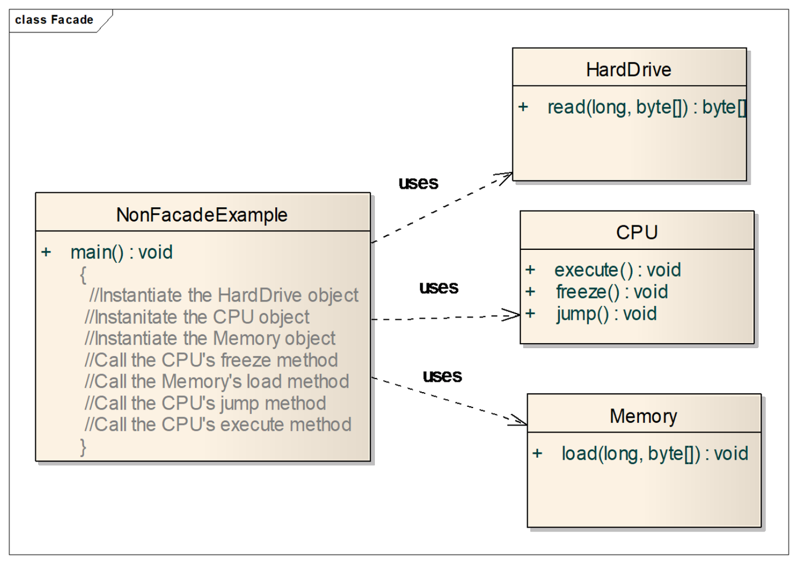
In the figure, NonFacadeExample has three “uses”
arrows, to HardDrive, CPU and Memory. The comments in its
main() show the work that the client must do: create all
three objects, then call freeze, load,
jump and execute in exactly this order. Every
client that wants to start the computer must repeat these seven steps.
If the start-up order changes, every such client changes.
Solution
A façade provides a unified interface to a set of interfaces in a subsystem. It defines a higher-level interface that makes the subsystem easier to use.
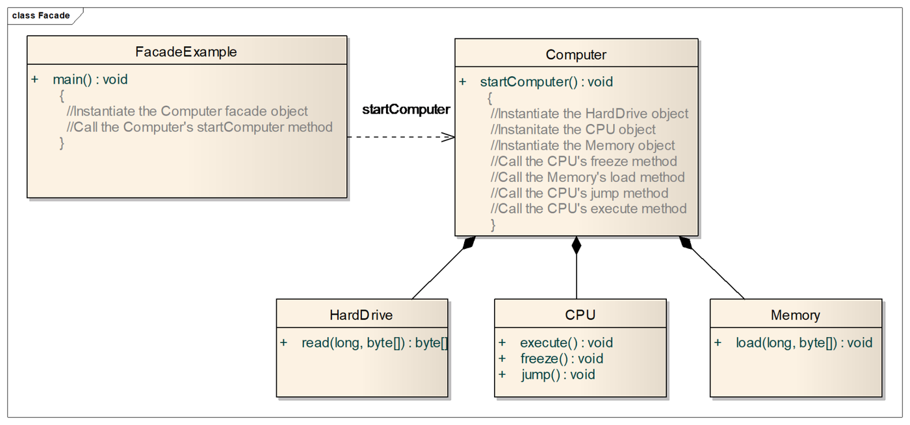
Compare it with the problem figure:
- FacadeExample now has only one
arrow, to Computer. Its
main()has two steps: create the Computer, callstartComputer(). - The seven steps moved into
Computer.startComputer(). They are written once, in one place. - Computer → HardDrive, CPU, Memory are compositions (filled diamonds at Computer). The façade owns the subsystem parts and creates them itself.
The subsystem classes do not change, and a client that needs fine control can still call them directly. The façade adds a simple entry point. It does not hide the subsystem completely.
| Pros | Cons |
|---|---|
| Code is easier to use and to understand | A badly designed façade causes more rework |
| Fewer dependencies on subsystem classes | Many façade classes add complexity and slow the program |
| Decouples the client from a complex subsystem |
Combining patterns
Real designs often need more than one pattern, because one pattern solves only one problem.
Example: announcements through many channels
This extends the lecture’s course-announcement example. Students subscribe to the announcements of their own tutorial group. When a new announcement is posted for a group, each student in that group receives it through the channel that the student chose: email, app push or SMS. Students can change group and channel at any time. New channels must be easy to add.
The feature has three separate problems:
- Students must get updates for their group only, and must be able to join and leave → Observer, with interest subscription and selective notification.
- The delivery channel must be interchangeable, and new channels must be easy to add → Strategy.
- Some code must choose and create the right channel object → Factory.
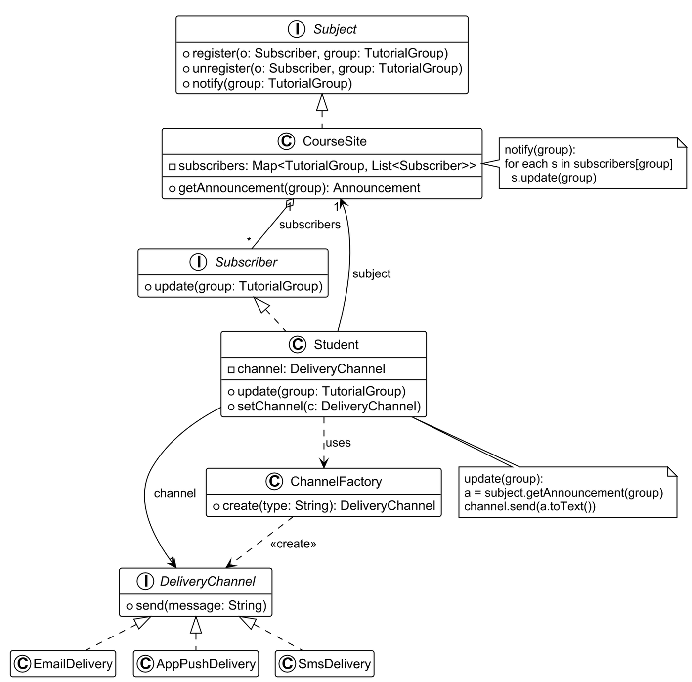
How to read the diagram. The circled letter in each box header says what it is: I for an interface, C for a class. A hollow circle before a member means public, and a hollow square means private.
- Top half: Observer.
CourseSiterealizesSubject. Itssubscribersfield is a map from each tutorial group to a list of subscribers. That map is what makes selective notification possible. The note showsnotify(group): it loops over that group’s list only. StudentrealizesSubscriber. The aggregation line (hollow diamond at CourseSite,1to*) is the subscriber list. Thesubjectarrow back to CourseSite lets the student pull the announcement. The note showsupdate(group): pull the announcement, then pass it to the channel.- Bottom half: Strategy.
Studentis also the Context. It holds achannelof typeDeliveryChannel, the Strategy interface.EmailDelivery,AppPushDeliveryandSmsDeliveryare the concrete strategies.setChannel()swaps the channel at run time. - Factory.
ChannelFactory.create(type)turns a name such as “email” into the right object. The<<create>>arrow points at the interface, because that is the return type. No class containsnew EmailDelivery()except the factory.
One class can play roles in two patterns. Here Student
is the concrete observer and the strategy context at the same time.
What is missing from a Strategy-only design
A Strategy design shows how the context uses interchangeable
algorithms. It does not show who creates the concrete
strategy. Without a factory, each client chooses and creates the
strategy with its own if / else and new. Then
each new strategy changes these clients, which breaks the open–closed
principle. A Factory completes the design: it puts the
selection and the creation in one place.
Is it always good to combine patterns, or to use many patterns?
No. Use a pattern only when its problem is really present.
- For: each pattern solves a real problem. Together they give loose coupling, flexibility and extensibility. MVC itself is a combination of Observer, Strategy and other patterns.
- Against: each pattern adds classes, interfaces and indirection. If the variation that a pattern prepares for never happens, the extra classes only make the code harder to read, debug and maintain. Combined patterns are harder for new team members to learn. Each extra call can slow the program.
- Conclusion: apply a pattern when the requirements show a clear need (a real change or variation). Do not add patterns “just in case”. This matches the agile idea of simple design.
Getting ready for exam questions
The usual question: “Propose a scenario in the system where more than one design pattern can be applied together, and draw the class diagram” (about 6 marks).
- Pick a feature with two problems: something that must notify many parties (Observer) and something that must vary (Strategy). Add a Factory if the varying object must be created.
- Write the design problem for each pattern in one or two sentences.
- Draw the class diagram with the interfaces, the concrete classes,
and the methods that matter (
register,notify,update, the strategy method,create). - Label the role of each class: Subject, Observer, Context, Strategy, ConcreteStrategy, Factory.
Good scenarios for many project types:
| Feature | Observer | Strategy | Factory |
|---|---|---|---|
| Alerts to users | Users subscribe to alerts, for example for their location or interest | Delivery by app push, SMS or email | Create the delivery object |
| Payment | — | Card, PayPal, wallet | Create the payment object from the user choice |
| Device control | The UI observes the device state | Different device protocols | Create the protocol object per device type |
| Recommendations | Users get a notice when new results match their preferences | Different ranking algorithms | Create the ranking algorithm |